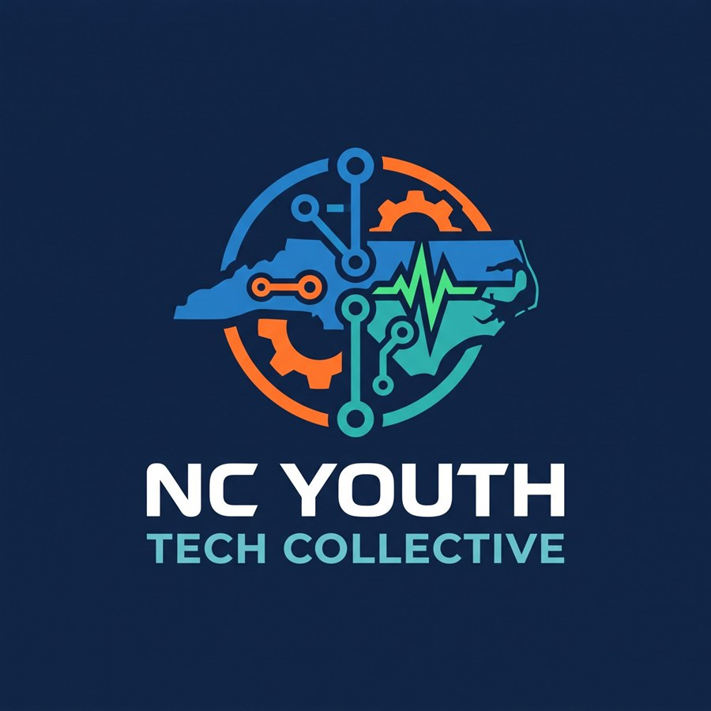

In-demand technical skills
AI and machine learning literacy, programming, electronics and engineering design, all learned by doing.
Free · Ages 12–17 · North Carolina
Hands-on workshops in coding, AI, electronics and robotics. We're a free workforce development program, brought to teens through North Carolina libraries, makerspaces and youth organizations.

Workforce development
In every workshop, teens build something real and understand how it works. They also see how what they made connects to jobs in North Carolina and beyond.
AI and machine learning literacy, programming, electronics and engineering design, all learned by doing.
Teamwork, problem solving, testing and debugging, and presenting work to others.
Each workshop connects what teens build to real jobs, from machine learning engineer to accessibility designer.
Teens leave with free tools to keep going at home, plus pointers to school CTE courses, community college programs and other youth tech opportunities.
How it works
A library, makerspace or youth organization provides the space and invites teens.
A professional technology educator leads the session with tested curriculum and hands-on materials.
Teens leave with a project they made, new skills, and free tools to keep learning.
Workshops
Teens train their own image-recognition AI, then try to break it. Along the way they learn how machine learning really works, why biased data leads to biased AI, and how to design a model that solves a real problem for a real user.
More workshops on electronics, physical computing and robotics are in development.
Upcoming
We're scheduling our first sessions with partners across North Carolina. Dates and locations will be posted here. To bring a workshop to your community, ask your local library or get in touch.
For partner organizations
Libraries, makerspaces, schools and youth programs: offer your teens a high-quality STEM and workforce development program at no cost.
For families
Nothing. Workshops are free for participants.
No. Workshops are designed for beginners, with extra challenges for teens who already have experience.
Just curiosity. The host provides devices, and we bring everything else.
Teens practice skills employers look for, like AI literacy, problem solving, testing and teamwork. They also learn about real careers that use these skills, and leave with clear next steps for continued learning.
A staff member from the host organization is present for every workshop. The AI tools we use run in the web browser, need no accounts, and by default keep training images on the device. All work is cleared at the end of each session, and photos are only taken with a signed release.
Registration is handled by each host organization. Upcoming workshops will be listed on this page, with a link to register.
For educators
Are you an educator, librarian or youth program leader who wants to bring hands-on tech and workforce development to teens? We'd love to collaborate.
Get in touch →About
NC Youth Tech Collective was founded by Mike Renne, a North Carolina professional technology educator. The goal is to give every teen, regardless of zip code or budget, the chance to build with technology and see a future for themselves in it.
Want to host a workshop, support the program, or ask a question? We'd love to hear from you at mike@ncyouthtechcollective.org.